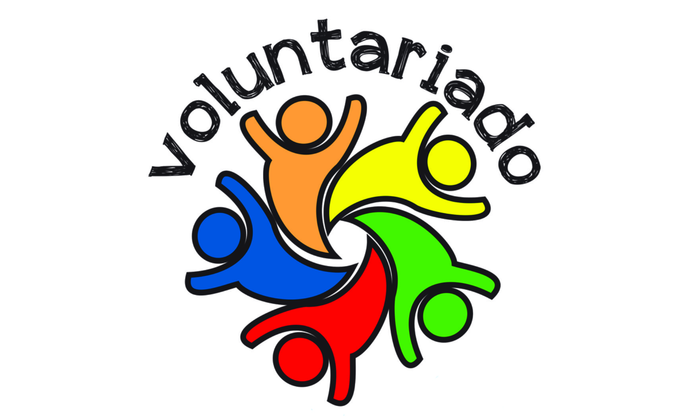

Educação Financeira para mudar o Brasil
A Bem Gasto é um projeto sem fins lucrativos cujo único objetivo é transformar a vida das pessoas através da Educação Financeira.
Por que Educação Financeira?
Educação financeira é saber como tomar as melhores decisões sobre seu dinheiro. Ao aprender seus preceitos, o cidadão conquista a liberdade de fazer as escolhas de como gastar e investir seus recursos.
Sem educação financeira, fica mais difícil conquistar sonhos e até mesmo suprir as necessidades do dia a dia.

Participe do projeto como professor de edução financeira ou em atividades administrativas.

Se você tem uma empresa ou projeto nós podemos desenvolver soluções especiais de educação financeira.

Importância da educação financeira
falta de conhecimento sobre como lidar com o próprio dinheiro e administrar o orçamento (renda menos os gastos) leva as famílias ao endividamento, restrição de crédito, limitações no padrão de vida entre outras situações. Logo, se os recursos disponíveis (renda) são limitados e as necessidades ilimitadas, é preciso equilibrar as escolhas que envolvem o uso do dinheiro.>
A Educação Financeira ensina os indivíduos a refletirem sobre situações que envolvem o uso do dinheiro, e através dela esses indivíduos desenvolvem competências e habilidades que os permitem consumir, poupar, e fazer investimentos, ou seja, organizar a vida financeira fazendo planos e estabelecendo metas. Visando a disseminação dessa temática, destaca-se o posicionamento da Estratégia Nacional de Educação Financeira (Enef) a qual defende que “a educação financeira tem um papel fundamental ao desenvolver competências que permitem consumir, poupar e investir de forma responsável e consciente”.

Que tal começar o ano com o controle do seu dinheiro?
Quando criança eu adorava uma brincadeira inocente que um dos meus tios fazia sempre comigo. Brincar de mágico. Achava um máximo, mas no fundo, bem no fundo, eu sabia dos truques dele e nunca me importei em ser surpreendida e em retribuí-lo com o Ohhhh! No entanto, cá estou, adulta e vacinada, e sabendo que mágica é um truque, um efeito de ótica. Mesmo com a verdade estampada, continuo gostando de mágica, mas ainda não aprendi a mágica da criação do dinheiro. Aliás, acredito que nenhum de nós. Não é verdade?
Então o objetivo deste post é trazer para você um pouco dos aprendizados sobre o sonhado e suado dinheiro, que nos traz possibilidades maravilhosas e que também pode nos dominar. E o meu principal aprendizado foi como ter controle sobre ele.